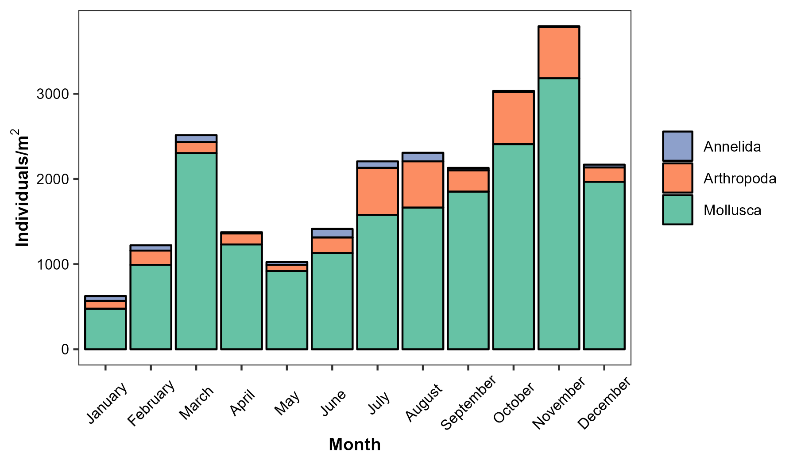
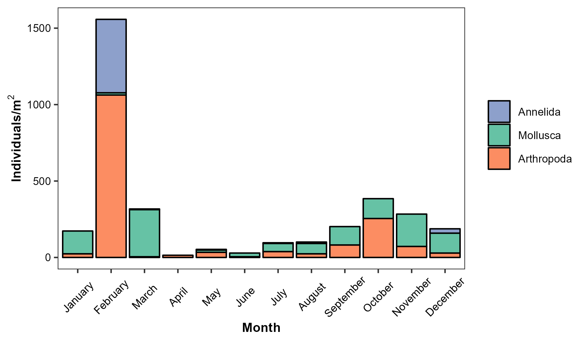
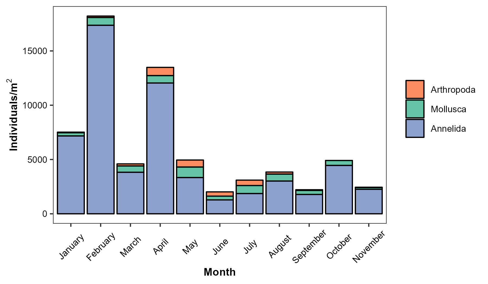
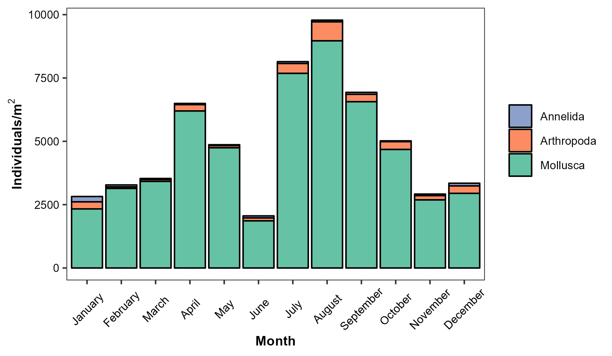
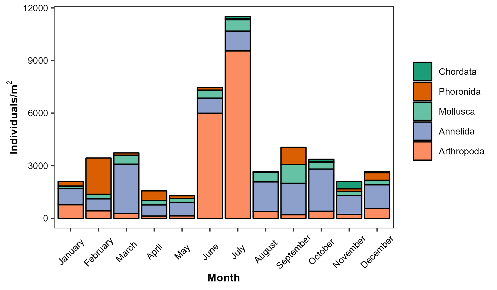

Current Report
Introduction
Benthic monitoring conducted by the California Department of Water Resources (DWR) since 1975 has documented changes in the composition, density, and distribution of the macrobenthic biota inhabiting the upper San Francisco Estuary. This monitoring is performed by the Environmental Monitoring Program (EMP) as part of the Interagency Ecological Program (IEP) and is one component of the biological monitoring mandated by Water Right Decision D-1641. Since benthic species respond to changes in physical factors such as freshwater inflows, salinity, and substrate composition, benthic community data provides an indication of physical changes occurring within the Estuary. Benthic monitoring is an important component of the EMP because operation of the State Water Project can change the Estuary’s flow characteristics, affecting the density and distribution of benthic biota. Benthic monitoring data is also used to detect and document the presence of new, non-native species in the Upper Estuary, such as the 1986 arrival and subsequent wide spread of the overbite clam, Potamocorbula amurensis. This article summarizes benthic community characteristics at EMP monitoring sites in 2022 and contextualizes these observations using community data from the preceding decade.
Methods
Benthic monitoring was conducted monthly at 10 sampling sites distributed throughout the Estuary, from San Pablo Bay upstream through the Sacramento-San Joaquin Delta (Figure 41). EMP staff collected four bottom grab samples at each station using a Ponar dredge with a sampling area of 0.052 m2. The four replicate grab samples were analyzed for benthic macrofauna by Hydrozoology, a private laboratory under contract with DWR. All organisms were identified to the lowest taxon possible and enumerated. Field collection methodology and laboratory analysis of benthic macroinvertebrates are described in detail in the benthic metadata found here.

Results
The benthic fauna collected in 2022 comprised nine phyla: Annelida (42% of total organisms), Arthropoda (28%) and Mollusca (30%), with Phoronida, Nematoda, Chordata, Platyhelminthes, Cnidaria, and Nemertea each representing1% or less of total organisms. Of the 200 benthic species collected in 2022, the ten most abundant species represented 70% of all individuals collected throughout the year (Table 1). These include three species of amphipod, two clams, two oligochate worms, two polychate worms, and one cumacean arthropod (also known as a comma shrimp, although it is not actually a shrimp). Only one species in this group (the amphipod Americorophium spinicorne) is native to this estuary. The rest of the top ten species are non-native or are cosmopolitan species of unknown origin. Refer to Fields and Messer (1999) for descriptions of the habitat requirements, physical attributes, and feeding methods of many of these species.

In the site descriptions that follow, most species densities are reported as the annual densities of individuals/m2, sometimes noting dramatic seasonal peaks. Some species, especially arthropods, display strong seasonal variability with peak monthly densities several times higher than their annual densities. In these cases, we reported the time and magnitude of the peaks as well as the annual densities. Please note that the station P8 was not sampled in December 2022 due to heavy fog, and comparisons to other years’ average annual densities or seasonal patterns should take this omission into account. Readers who wish to see the full dataset and its associated metadata can access here.
North Delta (D24)
Site D24 is located on the Sacramento River, just south of the Rio Vista Bridge (Figure 41). There were 19 species in six phyla at D24. Mollusca was the most abundant phylum for much of the year and made up 83% of all organisms collected at the station (Figure 43). A large majority (80%) of the individual organisms found at D24 in 2021 were the non-native clam Corbicula fluminea, with an annual average density of 1,595 individuals/m2. Corbicula fluminea density in 2022 was a decline from the high densities of 2018-2020, which peaked with 2020’s annual average of 3,756 individuals/m2. The second most abundant organism was the non-native amphipod Gammarus daiberi with an annual density of 230 individuals/m2, which was a similar decline from a 2020 peak of 1,078 individuals/m2. Besides these notable declines from 2020 peaks, the composition of the community at D24 in 2022 was similar to other years in the last decade.

Central Delta (D16, D28A)
The benthic monitoring program sampled at two stations, in the Central Delta, D16 and D28. Site D16 is on the lower San Joaquin River near Twitchell Island (Figure 41). There were 19 species in three phyla at D16 in 2022, split largely between Arthropoda (48% of all organisms collected in 2020), Mollusca (36%), and Annelida (16%), (Figure 44). The most abundant species at D16 was the clam Corbicula fluminea which accounted for 33% of all organisms in 2022, with an average annual density of 93 individuals/m2 and a peak in March of 308 individuals/m2. The amphipod Americorophium spinicorne was the second most abundant organism, accounting for 32% of all individuals, with an average annual density of 92 individuals/m2 and a drastic peak in February of 1034 individuals/m2. Much of the rest of the community was a combination of multiple species of amphipods and other annelid worms at lower densities. The total number of organisms at D16 in 2022 was slightly increased from the very low numbers of 2020 and 2021, but was still lower than other years in the previous decade In particular, 2020-2022 saw very low numbers of the amphipod Americorophium spinicorne, which has vwwn seen in very high numbers from 2015-2018.
The site on Old River near Rancho Del Rio is known as D28A (Figure 41). In 2022, there were 70 species in seven phyla at D28A, and this site had the largest number of individual organisms collected. The most abundant phylum was Annelida, followed by Arthropoda and Mollusca (61%, 34%, and 4% of all organisms, respectively) (Figure 45). The most abundant species was the sabellid worm Manayunkia speciosa with an annual density of 1,726 individuals/m2 and a notable peak in March of 4,577 individuals/m2. Next most abundant was the oligochaete worm Variachaetadrilus angustipenis, with an annual density of 1,609 individuals/m2, followed by the amphipods Gammarus daiberi and Americorophium spinicorne, with annual densities of 1,044 and 903 individuals/m2. Both these amphipod species had marked peaks in June and July, with low densities the rest of the year. Site D28A had annual total densities of organisms that were comparable to other years in the past decade, and also similarly high species richness.


South Delta (P8, C9)
The benthic monitoring program sampled at two stations in the South Delta. Site P8 is on the San Joaquin River at Buckley Cove (Figure 41). Station P8 had a total of 64 species in six phyla in 2022. Annelida was by far the most abundant phyla at this station in 2022, accounting for 86% of all organisms collected (Figure 46). The dominant species driving most of the Annelida patterns was the non-native sabellid worm Manayunkia speciosa, which had an annual density of 2,594 individuals/m2 and accounted by itself for 42% of all organisms. Manayunkia speciosa in 2022 remained moderately higher than its lowest densities in 2018 and 2020, but nowhere near the high densities seen from 2012 to 2015 which peaked at 11,338 individuals/m2 in 2015. The oligochate worms Limnodrilus hoffmeisteri and Varichaetadrilus angustipenis were the next most common organisms at 1,514 and 505 individuals/m2 annual density, followed by a long tail of many species represented at low densities. This community composition has remained largely unchanged through the last decade, apart from the notable boom and bust of M. speciosa.
Site C9 is on Old River at the Clifton Court Forebay intake (Figure 41). There were 87 species in seven phyla at C9 in 2022, a tie with 2021’s record high for site species richness. Annelida was the dominant phylum throughout the year, accounting for 69% of all organisms collected in 2020, followed by 25% Arthropoda. (Figure 47). An oligochaete worm, Varichaetadrilus angustipenis, made up 28% of all organisms with an annual density of 1,316 individuals/m2, which was less than half its density in 2021 and roughly a third of the high-density years of 2012, 2013, and 2019; it reached similar lows in the drought years of 2015 and 2016. The freshwater amphipod Hyalella sp. A ranked second with an annual average of 740 individuals/m2, most of which were seen in a peak of 3,129 individuals/m2 in November. Like V. angustipenis, Hyalella had very low annual densities in 2022, and these have declined steadily since 2012. The oligochaete worms Limnodrilus hoffmeisteri and Ilyodrilus frantzi complete the list of higher-density organisms, at 621 and 502 individuals/m2. Similar to P8, C9 has a large number of low-density species, including the highest diversity of aquatic insect larvae at any site sampled (27 species in 2022, mostly chironomid midges). The community was dominated by oligochates and had the same overal composition as it has for many years, but 2022 saw a notably lower average CPUE than at any time in the last decade.


Confluence (D4)
Site D4 is located near the confluence of the Sacramento and San Joaquin Rivers, just north of Point Sacramento (Figure 41). There were 41 species in four phyla at D4 in 2022, and the second largest numbrr of total organisms in 2022. Arthropoda was the most abundant phylum (51% of all organisms) followed by Annelida (25% of all organisms) and Mollusca (24% of all organisms) (Figure 48). The native amphipod Americorophium spinicorne was the most abundant species at this station, and made up slightly over 35% of all individual organisms in 2022 with a dramatic seasonal peak of 23,8052 individuals/m2 in May 2022 but an annual average considerably lower than any year since 2016. The invasive bivalve Potamocorbula amurensis was second, with an annual average density of 1,296 individuals/m2, up moderately from the low densities of the preceding decade. The annelid Laonome calida came next with an annual density of 1,093 individuals/m2.
Because of D4’s position at the front of saltwater and freshwater mixing in the estuary, we often see a shift from the freshwater clam Corbicula fluminea to more brackish-water Potamocorbula amurensis in dry years, and indeed the recent high densities of Corbicula from 2017 through 2019 continued to decline while Potamocorbula increased over the same time period. 2022 was also notable for its continued decrease in A. spinicorne in 2022 from the peaks in 2019 and 2020. Like C9, D4 in 2022 had the lowest overall lower average density of total organism it has seen in a decade.

Suisun Bay (D6 and D7)
The benthic monitoring program sampled at two stations in the Suisun Bay area, D6 and D7. Site D6 is in Suisun Bay near the I-680 bridge (Figure 41) and had 28 species in five phyla in 2022. Mollusca was the dominant phylum, accounting for 91% of all organisms collected (Figure 49). Most of the organisms collected were the invasive Asian clam Potamocorbula amurensis, which had an annual density of 4,600 individuals/m2, in a considerable decrease from its 2020 high of 22,708 individuals/m2. Potamocorbula amurensis was most abundant in from June through October. The relatively few other organisms found at this site were predominately from phylum Arthropoda (mostly the brackish-water bay barnacle Amphibalanus improvisus, found mostly growing on P. amurensis shells). 2022 saw the lowest number of P. amurensis in over a decade at D6.
Site D7 is in Grizzly Bay, near the entrance to Suisun Slough (Figure 41). There were 30 species in five phyla in 2022. Arthropoda comprised 49% of the total organisms, Mollusca 43%, and Annelida 8%. The cumacean arthropod Nippoleucon hinumensis and the non-native clam Potamocorbula amurensis were the two most abundant species, comprising 44% and 43% of the total community through the year, respectively (Figure 50). For the first time since the invasion of P. amurensis, there were fewer P. amurensis than N. hinumensis in 2022 at D7. Nippoleucon hinumensis had an annual density of 2,298 organisms/m2, but saw a strong seasonal pattern: relatively high densities from March through June and relatively lower densities the rest of the year. Potamocorbula amurensis had an annual average density of 2,241/organisms/m2. While P. amurensis has been numerically dominant through the last decade, a major change in 2022 was the rise of N. hinumensis and a simultaneous crash of the amphipod Sinocorophium alienense, which had been the second-densest species at D7 for at least the last decade. Sinocorophium alienense crashed in 2021 to around 300 organisms/m2, and was completely absent from D7 in 2022.


San Pablo Bay (D41, D41A)
The benthic monitoring program sampled at two stations in San Pablo Bay, D41 and D41A. Station D41 is near Point Pinole (Figure 41) and has a benthic community primarily comprised of marine organisms, especially in drier water years. There were 77 species in eight phyla at D41 in 2022. Arthropoda was the most abundant phylum (41% of all organisms) followed by Annelida (35%), Mollusca (11%) and Phoronida (11%) (Figure 51). The dominance of phylum Arthropoda was due almost entirely to the non-native amphipod Ampelisa abdita, and this one species comprised 38% of all organisms found at this station in 2021, with an annual average of 1,450 individuals/m2. Ampelisca abdita was most abundant from in June and July, peaking at 9,264 individuals/m2 in July and decreasing for much of the rest of the year. The second most abundant species was Phoronis harmeri, a native tube-dwelling filter-feeder, from the small marine lopophorate phylum Phoronida with had an average annual density of 415 individuals/m2 . The window shell clam Theora lubrica, along with the tube-dwelling spionid worm Pseudopolydora kempi and the polychaete worm Scoletoma luti, were the other species found in notable densities. D41 overall community composition in 2021 was similar to the preceding decade, and adds another year of evidence supporting the observation that higher-salinity years such as 2021 see density increases in more marine species such as Apelisca abdita, Phoronis harmeri, and Theora lubrica but lower numbers of the clam Potamocorbula amurensis, which prefers more brackish water and is mostly only seen at D41 in wetter water years.
Station D41A is in San Pablo Bay near the mouth of the Petaluma River (Figure 41). There were 51 species in seven phyla at D41A in 2021. The most abundant phyla was Annelida (60% of all organisms), with Mollusca second (27%) and Arthropoda third (11%) (Figure 52). The two most numerous species were the window shell clam Theora lubrica and the spionid worm Pseudopolydora paucibranchia, which together made up 48% of all organisms in roughly equal numbers. The sabellid worm Euchone limnicola was third with 16% of the total organisms. All three of these species had summer peaks, with their highest densities in June and July. Theora lubrica peaked in July 2,072 individuals/m2, P. paucibranchia in July at 4,529 individuals/m2, and E. limnicola in June at 1,966 individuals/m2. The community in 2022 was lacking the species which had been numerically dominant for the previous decade: the amphipods Ampelisca abdita and Monocorophim acherusicum, the clam Potamocorbula amurensis, and the small cumacean arthropod Nippoleucon hinumensis were at some of their lowest levels since 2012.

Conclusion
In summary, 2022 saw lower average organism density than any year of the past decade. This trend was consistent across most sites but was largely caused by decrease of previously high densities of Potamocorbula amurensis at stations D6 and D7, and various amphipod species at many other sites, especially Ampelisca abdita in San Pablo Bay and Sinocorophium alienense in Grizzly Bay. The freshwater clam Corbicula fluminea is also at low average densities in most upstream sites, along with the cumacean arthropod Nippoleucon himumensis in the Grizzly Bay, Suisun Bay, and Confluence stations. Since many fish species have switched to amphipod food sources after the collapse of mysid shrimps (Feyrer et al. 2003), the near disappearance of various amphipod and cumacean species may may have food web implications unless they have simply shifted its range out of our sampling area. Ordinarily, the decrease of both species of invasive clams and their filter-feeding activity would be a favorable sign for the ecosystem, and maybe their lower numbers in 2022 will be beneficial later on in 2023 if they allow other species to rebound, but the relative absence of several other numerically dominant members of the community in 2022 has unclear implications. Our ability to recognize these changes over decadal timescales highlights the importance of continued monitoring of benthic invertebrates to a high taxonomic resolution across the entire estuarine salinity gradient, as the community interacts with both various abiotic conditions as well as key parts of the estuarine food web.
References
Fields W, Messer C. 1999. Life on the bottom: Trends in species composition of the IEP-DWR Benthic Monitoring Program. IEP Newsletter 12(4): 38-41.
Carlton, J. T. 2007. The Light and Smith manual: Intertidal Invertebrates from central California to Oregon, 4th edition. Berkeley, CA, University of California Press.
Feyrer, F., B. Herbold, S. A. Matern and P. B. Moyle. 2003. Dietary shifts in a stressed fish assemblage: consequences of a bivalve invasion in the San Francisco Estuary. Environmental Biology of Fishes 67(3): 277-288.
Archived Reports
Previous EMP benthic invertebrate reports can be found here.